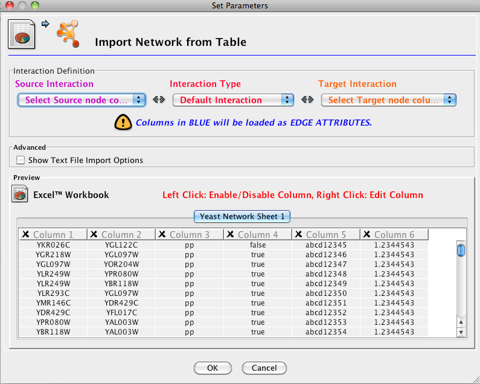
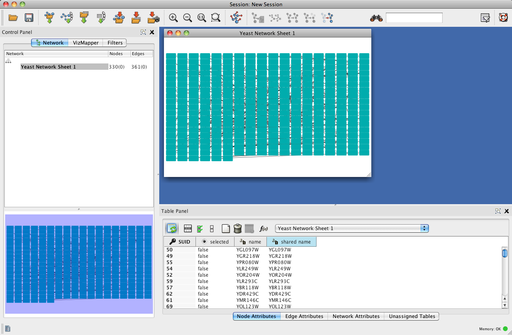
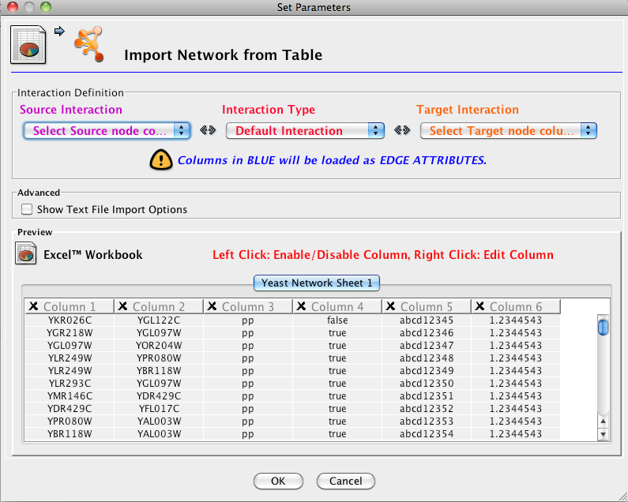
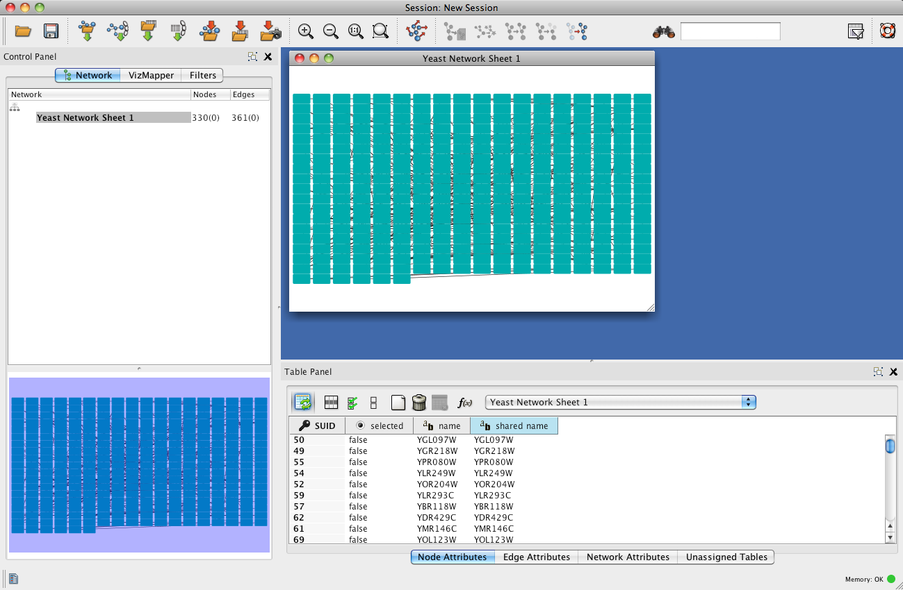

| Click on this toolbar icon to open a network from a spreadsheet | |
| Select an Excel Spreadsheet (.xls, .xlsx, .tab) like
galFiltered.xls in the sampleData folder. A dialog like this will appear:
 |
|
| For Source Interaction
choose the first column of node names. |
|
| For Target Interaction
choose the second column of node names. |
|
|
Optional. If the first row contains column names, then click on Show Text File Import Options and then click on Transfer first line as attribute names. |
| Click on OK. Afterwards, Cytoscape will look like this:
 |